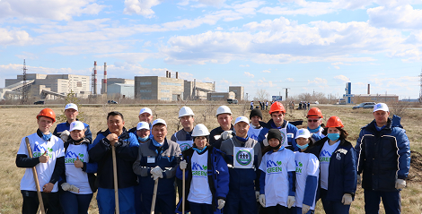
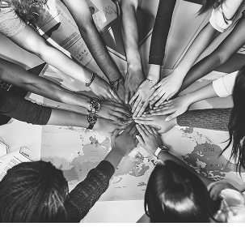

УСТОЙЧИВОЕ РАЗВИТИЕ
Мы стремимся быть надёжным и ответственным производителем, соответствующим современным требованиям устойчивого развития. Внедрение ESG-принципов — часть нашей долгосрочной стратегии и практической повседневной работы на всех уровнях.
Снижение воздействия на окружающую среду
Развитие энергоэффективных решений
Внедрение экологически безопасных технологий
Повторное использование ресурсов
Безопасные условия труда
Развитие персонала
Поддержка локальных сообществ
Уважение к правам человека
Снижение социального неравенства
Прозрачность в принятии решений
Управление рисками
Соблюдение деловой этики
Внутренний контроль
Антикоррупционная практика
Сокращение воздействия на окружающую среду
Повышение эффективности использования ресурсов
Высокие стандарты промышленной безопасности и охраны труда
Сохранение здоровья персонала
Обеспечение достойных условий труда
Этическое ведение бизнеса и антикоррупционные стандарты
Открытый диалог с обществом и сотрудниками
Эффективная система корпоративного управления
Вклад в социально-экономическое развитие страны
Экономическая устойчивость и развитие
«Мы обеспечиваем качество жизни, здоровья и окружающей среды для настоящих и будущих поколений. Ответственность за сохранение природной среды является одним из основополагающих принципов деятельности «Костанайские минералы».

Мы вносим вклад в устойчивое развитие региона, соблюдая природоохранное законодательство, рационально используя ресурсы и постоянно совершенствуя экологическую деятельность.
На предприятии действует система экологического менеджмента по СТ РК ISO 14001-2016.
Экологические намерения отражены в Политике в области качества и охраны окружающей среды.
Воздействие производства на окружающую среду анализируется на всех этапах, а экологические аспекты учитываются при управленческих решениях.

Охрана воздушного бассейна

Охрана водных ресурсов

Минимизация отходов

Экология города

География озеленения:
Высажено саженцев
Общая сумма

Между компанией и сотрудниками
Между компанией и сотрудниками
Между компанией и сотрудниками
Отпускные выплаты
Поощрения к свадьбе
Компенсации за детсад
Питание и проезд
Путёвки
Беспроцентные ссуды на жильё
Ежемесячных премий
Квартальные премий
Проектные премии
Доплаты за ЗОЖ
Компенсации многодетным и нуждающимся семьям
Культурные и спортивные мероприятия
КМ-лиги по футболу
КМ-лиги по хоккею
Бесплатные тренировки для детей
Доступ к бассейну «Алма-Ата»
ФОК «Горняк» футбольное поле, корты, спортплощадки
Активно работают Советы ветеранов и молодежи
К праздникам поощряются лучшие сотрудники.
Развитая преемственность поколений
Премия «Алтын канат»
Трудовые династии